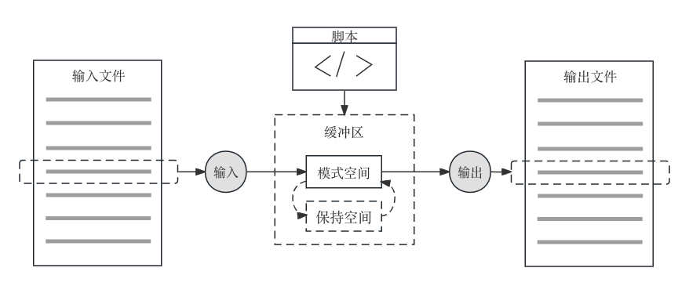

第 10 章 命令行
上下无常，刚柔相易，不可为典要，唯变所适。–《周易》
命令行对于初学者而言就像是一个黑色的魔法界面，但实际上命令行才是计算机系统的母语。当我们使用命令行的时候，我们可以清楚的看到程序的输入、输出与执行过程，所以最接近数据工程的“透明原则”。与此同时，命令行脚本可以形成非常灵活的轻量级工具，可以把不同任务连接起来，是“天然胶水”。因此，熟练掌握命令行界面对于数据处理至关重要。
在命令行里，我们需要给计算机以非常精准的指令，这对我们的逻辑思考能力是一个质的改变。在日常生活中，“我以为我知道”和“我确定真的知道”是两个完全不一样的概念，尤其对于经济学家而言，很多时候我们经常处于前者的状态而不自知。在命令行中，我们被迫要达到第二种状态。
命令行普遍存在于几乎所有的操作系统，包括但不限于GNU/Linux，Unix，macOS，Windows WSL，以及各种超级计算机。掌握一套命令行工具，可以让我们在各类系统上穿梭自如。
我们不可能通过一章的篇幅帮助读者成为玩转命令行的专家，因此，本章的目的在于介绍最基本的命令行语法，希望借助本章的内容，为读者在未来研究与工作中使用和学习命令行工具留下合格的学习接口。
10.1 命令的基本概念
操作系统是一个内核（kernel），是内部与硬件交互的；外部是人机交互的部分，叫做壳（shell），是人类到操作系统的桥梁。shell有两种，命令行（Command Line Interface, CLI）和图形（Graphical User Interface, GUI）。最典型的命令行shell是GNU Bourne-Again Shell（bash）。
bash是GNU运动的一部分，是目前使用最广泛的shell，但它是一个基础的shell，可配置的选项有限，限制了使用时的便捷性。
zsh是另一个使用广泛的shell，搭配”Oh My Zsh”插件，可以将shell的功能配置的非常丰富，例如丰富的主题，语法高亮与命令补全等。2019年，Apple的macOS Catalina将zsh作为默认shell，取代了bash。但是，zsh的复杂性会让初学者感到不知所措，其丰富的配置选项会让初学者感到困惑。
我们推荐初学者一个介于bash与zsh之间的选择-fish，推荐脚本使用bash，命令行交互可以使用fish。
10.1.1 fish
fish，全称“friendly interactive shell”，首次发布于2005年2月13日，原作者为 Axel Liljencrantz，是一个专注于交互性和可用性的 Unix shell。它最大的优点是在不需要配置的情况下，就提供了大部分的功能，非常适合不想学习一大堆语法，或者花费很多时间配置的初学者。
10.1.1.1 fish的安装
debian用户使用apt安装，macos使用brew命令安装。
apt install fishbrew install fish安装完成后，直接通过fish命令可以启动fish。
10.1.1.2 设置fish为默认shell
在文件/etc/shells中添加/usr/local/bin/fish，之后，运行命令chsh -s /usr/local/bin/fish，可以将fish设置成默认shell。
10.1.1.3 fish的常用功能
相对于需要进行大量的配置才能获得良好体验的 zsh，fish原生附带有最为广泛使用的特性，比如：自动提示、语法高亮等等。同时其配置设置的语法清晰明了，通过模块化和 Web 可视化配置。
自动提示：fish 会通过显示灰色提示，提醒最近浏览历史，和可能希望浏览的内容。如果命令有误，则会将命令设置为红色。
文件和命令高亮：fish 会将文件设置为绿色，目录设置为蓝色。
生成数据制表页：fish 可以解析各种格式的工具手册页，假如你不知道该命令下有什么作用，可以通过输入
tab键获得提示自动补全：输入命令时，Fish 会自动显示上一次使用该命令历史记录（如果还希望查看之前的历史，还可以通过按”up”向上键查看）
10.1.2 常用命令
命令有五种类型：可执行程序、脚本、Shell内建命令、Shell函数还有别名。使用type命令可以查看其他命令的类型。
## echo is a shell builtin
## cat is /bin/cat特别地，命令行命令并不需要特别记忆，我们只需要了解常用命令，对于经常使用的命令，在使用的过程中很快就可以记下来
| 命令 | 功能 |
|---|---|
ls |
查看目录内的文件 |
cd |
改变路径 |
rm |
删除文件或文件夹 |
git |
版本控制相关的命令 |
less |
以分页方式查看文件内容 |
man |
查看命令文档 |
info |
GNU的命令详细介绍文件 |
cat |
将多个文件连接起来输出 |
pwd |
打印当前路径 |
seq |
生成等差数列 |
grep |
筛选符合条件的行 |
wc |
计数 |
echo |
打印字符到输出 |
find |
查找文件 |
touch |
新建文件/改变文件修改时间 |
mkdir |
新建文件夹 |
tee |
显示程序的输出并将其复制到一个文件中 |
bc |
计算器 |
uname |
查看系统基本信息 |
hostname |
用户信息 |
id |
用户id信息 |
date |
当前日期时间 |
uptime |
机器运行时间 |
dmesg |
显示内核环缓冲区信息 |
head |
文件头部若干行 |
tail |
文件尾部若干行 |
cut |
按列剪切输出 |
paste |
合并文件的列，cut的反函数 |
find |
查找路径下的文件 |
file |
识别文件类型 |
chmod |
修改文件权限 |
sed |
文件流编辑器，macOS需要使用gsed |
10.1.3 标准输入与输出
执行一个shell命令行时通常会自动打开三个标准文件，即标准输入文件（stdin），通常对应终端的键盘；标准输出文件（stdout）和标准错误输出文件（stderr），这两个文件都对应终端的屏幕。进程将从标准输入文件中得到输入数据，将正常输出数据输出到标准输出文件，而将错误信息送到标准错误文件中。命令行逐行读入输入文件。
例如，echo命令的功能是将参数中的字符串直接送到标准输出。
## I am using the command line10.1.4 管道与进程管理
管道可将前一个程序的标准输出和后一个程序的标准输入连接起来，从而将多个程序无线串联起来。默认情况下，键盘是标准输入的端口，屏幕是标准输出的端口。
## 28重定向通过<号将标准输入重定向到文件，>将标准输出重定向到文件
自由管道命令mkfifo可以定义命名管道，后续命令中可以把命名管道作为输出和输入使用。下列代码中，第一行生成命名管道filter，第二行使用tee将seq和grep的结果存入名字为filter的管道中，第三行调出管道，并计算其中包含8的字符。
## mkfifo: filter.pipe: File exists
## 56
## 78
## 87上述命令中，我们使用了&来将命令挂起（即后台运行）。使用jobs命令可以查看后台运行的进程，fg命令可以将后台进程拉至前台，bg命令可以将进程挂起到后台，kill加进程号可以杀死任务。
awk与sed命令的学习放在正则表达式之后，正则表达式的例子要单独拿出来分析。
## Hello Python!快捷键
ctrl+c ctrl+d 结束文件
10.1.6 脚本
把命令储存在拓展名为.sh的文件中，就形成了脚本文件。bash命令可以运行Shell脚本。
## 5050在第一行填加脚本解释器 #!/bin/bash，可以告知脚本执行时候要使用/bin/bash
解释执行。此处，#!是约定好的关键字，当它在脚本文件的第一行时，内核会寻找它后面的解释器来执行脚本。
使用chmod +x赋予脚本文件可执行权限之后，就可以直接运行脚本文件。
gsed '1i#!/bin/bash' -i add_up_100.sh # gsed是mac里面的GNU sed
cat add_up_100.sh
chmod +x add_up_100.sh
./add_up_100.sh## #!/bin/bash
## seq 100 | paste -s -d + -| bc
## 505010.1.7 传参
Bash脚本可以在执行时传递参数，参数以空格分隔，在脚本中可以通过$n来调用第n个参数，$0表示调用脚本名称。例如，脚本args.sh命令如下，
#!/bin/bash
echo "Bash 传递参数实例！";
echo "执行的文件名：$0";
echo "第一个参数为：$1";
echo "第二个参数为：$2";
echo "第三个参数为：$3";## Shell 传递参数实例！
## 执行的文件名：./args.sh
## 第一个参数为：a1
## 第二个参数为：b2
## 第三个参数为：c3另外，脚本中还有一些特殊的参数调用方式。
| 参数调用 | 作用 |
|---|---|
$# |
传递到脚本的参数个数 |
$* |
以单字符串显示所有参数 |
$$ |
脚本运行的当前进程ID号 |
$@ |
逐个显示所有参数 |
$? |
显示最后命令的退出状态，0表示没有错误 |
10.2 变量与数据结构
Bash脚本中以var=value的形式定义变量。由于Bash中约定空格的作用是区分参数，因此在变量赋值的等号前后不能有空格。如果需要把空格作为字符串处理，则需要引号。Bash中约定一切都是字符串，因此需要以${var}的方式来调用变量。Bash中单引号和双引号的区别在于，单引号中$会被当做字符串处理，而双引号中$被当做变量取值符号。
## hello world
## 1 = 1
## $b = 1$()可以把命令运行的标准输出复制给变量，按行分隔的列表转换为空格分隔。()的含义其实是把命令的结果变成一个字符串。${#}可以返回变量字符个数。
## 1 2 3 4 5 6 7 8 9 10
## 2010.2.1 路径变量
系统中有一组特定的由操作系统或用户设置的环境变量，用来配置Shell 的行为和影响其执行环境。其中最常用的是路径（PATH）变量，它包含了操作系统搜索可执行文件的路径。
## /usr/local/bin:/System/Cryptexes/App/usr/bin:/usr/bin:/bin:/usr/sbin:/sbin:/var/run/com.apple.security.cryptexd/codex.system/bootstrap/usr/local/bin:/var/run/com.apple.security.cryptexd/codex.system/bootstrap/usr/bin:/var/run/com.apple.security.cryptexd/codex.system/bootstrap/usr/appleinternal/bin:/opt/X11/bin:/usr/local/go/bin:/Applications/quarto/bin:/Library/TeX/texbin:/Users/birdstone/Applications/quarto/bin:/usr/texbin:/Applications/RStudio.app/Contents/Resources/app/bin/postback使用echo查看路径变量，可以发现执行路径以:分割。只有一个命令存在于执行路径中时，相关命令才能被执行，否则会报错command not found。
临时修改路径变量使用export命令。例如，如果希望将/usr/local/bin路径添加到路径变量中，可使用下面的命令。此更改只是临时的，仅在当前的Shell会话中有效。
通过配置文件设置PATH环境变量可以永久修改路径变量。在大多数Linux发行版中，当系统启动时，将从/etc/environment和/etc/profile以及~/.bashrc文件中读取环境变量。
全局的配置文件是/etc/environment和/etc/profile。如果要为系统所有用户设置PATH环境变量，请在这两个文件中修改。
为指定的用户设置PATH环境变量时，只需要在~/.bashrc文件修改PATH变量；如果使用的是zsh，则文件是~/.zshrc；如果使用的是fish，则是~/.config/fish/config.fish。
例如，
修改完成之后，使用运行source命令将加载环境变量到当前的shell会话，source ~/.bashrc。
10.4 控制流程
10.4.1 选择结构
bash的选择结构如下：
## 3>2上述代码中，[...]是一个程序（更准确地说，[是命令，]是这个命令的参数），正式的命令为test，即test 3 -gt 2。由于bash中没有逻辑值，程序执行成功就是TRUE，执行失败则对应FALSE，因此真假判断的依据来执行程序的返回值，命令执行成功时返回值为0，执行失败返回非0。这里正好与Python相反。$?或${?}变量值可以得到前一条命令的返回值。
## [ is a shell builtin
## 0test其他内建的判断参数：
| 参数 | 含义 |
|---|---|
[ INTEGER1 -eq INTEGER2 ] |
相等 |
[ INTEGER1 -ge INTEGER2 ] |
大于等于 |
[ INTEGER1 -lt INTEGER2 ] |
小于 |
[ INTEGER1 -ne INTEGER2 ] |
不等 |
[ ! EXPRESSION ] |
取否 |
[ EXPRESSION1 -a EXPRESSION2 ] |
取和 |
[ EXPRESSION1 -o EXPRESSION2 ] |
取或 |
-e file |
file文件是否存在 |
-d dir |
dir路径是否存在 |
-s file |
file文件是否存在且非空 |
使用man [查看更多参数。
上述代码可以用一种简洁的方式来写：
## 3>2下面的脚本可以用于判断第一个参数的路径是否存在，若不存在则生成相应的路径。
10.4.2 循环
10.4.2.1 for循环
以计算Fabonacci数列为例，for循环的结构如下，
## 144再举一个例子，把一个行数很多的文件拆分拆分成每一万行一组，可以使用下面的脚本。第一个参数和第二个参数为循环起止数，第三个参数为被拆分文件，第四个参数为储存文件路径与文件名称前缀。
10.5 函数
bash函数是五种命令之一。通过下面的代码结构可以定义bash函数。
## Hello, 大佬bash函数可以有return关键字指定返回结果，也可以默认将最后一行的运行结果作为返回值。
10.6 Linux文件与目录管理
10.6.1 Linux 链接
Linux链接分两种，一种被称为硬链接（Hard Link），另一种被称为符号链接（Symbolic Link，也叫软链接）。在Linux文件系统中，所有保存在磁盘分区中的文件都会被分配一个编号，称为索引节点号（Inode Index）。
硬链接指的是，多个文件名指向同一个索引节点，文件之间是平等的。默认情况下，ln f1 f2命令创建f1的一个硬链接文件f2硬链接。例如，
## 525329738 -rw-r--r--@ 2 birdstone staff 0 Feb 1 11:11 link_f1
## 525329738 -rw-r--r--@ 2 birdstone staff 0 Feb 1 11:11 link_f2
## 521855736 lrwxr-xr-x 1 birdstone staff 7 Jan 2 17:30 link_f3 -> link_f1可以看到link_f1与link_f2的节点都是521852386，如果我们修改其中一个文件的内容，另一个文件也会被修改（实际上是同一个文件）。
## I am file 1删除其中一个文件，不会影响另一个文件，只有删除所有相关的硬链接才能将文件真正删除。
## I am file 1
## cat: link_f2: No such file or directory符号连接，类似于Windows系统的快捷方式，是一种特殊的文本文件，文件中储存了另一个文件的位置信息。ln -s f1 f3命令创建f1的一个硬链接文件f3软链接，此时，f1和f3的节点号是不同的，执行不同的数据块，f3中储存的是f1的路径名称，当初删除f1时，f3会指向一个无效的位置。
touch link_f1
ln -s link_f1 link_f3
ls -li | grep 'link_f' # -i参数显示文件的inode节点信息
echo 'I am file 1' >> link_f1
cat link_f3
rm link_f1
cat link_f3## ln: link_f3: File exists
## 525329741 -rw-r--r--@ 1 birdstone staff 0 Feb 1 11:11 link_f1
## 521855736 lrwxr-xr-x 1 birdstone staff 7 Jan 2 17:30 link_f3 -> link_f1
## I am file 1
## cat: link_f3: No such file or directory10.7 应用案例
在获取谷歌专利文本时，如果把所有输出文件都放在同一个路径当中，将会给文件系统带来沉重的负担，甚至无法方便打开文件夹，更别说后续操作。因此，我们需要把任务设计地更细致。我们设计一个文件储存的架构，每100个文件储存在一个路径中，然后每100个文件夹再组成上一级目录，以此类推。下面的脚本可以实现这个功能。
#!/bin/bash
if [ ! -d "./description/$2" ]
then
mkdir ./description/$2
fi
if [ ! -d "./description/$2/$3" ]
then
mkdir ./description/$2/$3
fi
c=0
cat $1 | while read line
do
echo "Downloading:${line}"
if [ ! -d "./description/$2/$3/$((c/100))" ]
then
mkdir ./description/$2/$3/$((c/100))
fi
curl -k https://patents.google.com/patent/${line} > ./description/$2/$3/$((c/100))/${line}.html
let c++
done10.8 通配符与bash内建正则表达式
通配符可以按照规则匹配，用于构造简单的匹配模式，批量匹配。*匹配任意多个任意字符；？匹配一个任意字符。但是通配符可以匹配的空间比较有限，这就需要使用正则表达式。
在bash里面也内建了正则表达式的匹配，效率远远高于使用egrep。
由[[ EXPR =~ REGEX ]] 可以判断EXPR 是否能被REGEX匹配。运算支持扩展正则表达式，匹配结果由BASH_REMATCH列表给出。
seq 1000 | until ! read line
do
if [[ $line =~ ^23+$ ]]; then
echo ${line}
echo ${BASH_REMATCH[0]}
fi
done## 23
## 23
## 233
## 23310.9 grep命令
grep、sed与awk并称Linux文件处理三剑客。grep的全称为“Global search Regular Expression and Print out the line”，顾名思义，grep命令实现的功能是
查找，四舍五入等同于Windows中的“ctrl+F”实现的功能。工作时，逐行检验输入是否与正则表达式匹配，若是则输出该行。
grep命令使用基本正则表达式，grep -E可以指定使用扩展正则表达式。由于，该命令使用频率很高，因此直接被封装为egrep命令。-n参数可以输出匹配结果所在行数，-v参数表示返回不包括后续正则表达式的行。
## 233:233
## 2333:2333在实践中，egrep经常会配合其他命令使用，例如找出当前进程中的python进程。
## 233:233
## 2333:2333grep常用的参数含义如下：
| 参数 | 含义 |
|---|---|
| –color | 表示对匹配到的文本着色显示 |
| -i | 在搜索的时候忽略大小写 |
| -n | 显示结果所在行号 |
| -c | 统计匹配到的行数，注意，是匹配到的总行数，不是匹配到的次数 |
| -o | 只显示符合条件的字符串，但是不整行显示，每个符合条件的字符串单独显示一行 |
| -v | 输出不带关键字的行（反向匹配） |
| -w | 匹配整个单词，如果是字符串中包含这个单词，则不作匹配 |
| -e | 实现多个选项的匹配，逻辑or关系 |
| -q | 静默模式，不输出任何信息，当我们只关心有没有匹配到，却不关心匹配到什么内容时，我们可以使用此命令，然后，使用”echo $?”查看是否匹配到，0表示匹配到，1表示没有匹配到 |
| -P | 表示使用兼容perl的正则引擎 |
| -E | 使用扩展正则表达式，而不是基本正则表达式，在使用”-E”选项时，相当于使用egrep |
10.10 sed命令
sed是流编辑器（stream editor）的简称，它由Lee E. McMahon 在1973-1974年编写，最初出现在 Unix版本7中。今年刚好五十岁了，是本书介绍到的最古老的工具之一，历经半个世纪依然被大家使用，sed一定尤其独到的优势。
sed的工作原理如下图所示。sed继承自打印机ed命令，因此保留了很多ed的传统。它每次从输入文件读入一行数据（同时删除换行符）到临时缓冲区的模式空间，然后根据脚本中定义的动作对数据进行处理，处理完成后添加换行符，同时输出到输出文件，当前工作周期结束。然后开始处理下一行数据，直到文件末尾。
为了实现相对复杂的任务，临时缓冲区又分为两个空间，模式空间（pattern space）用于储存当前处理的数据，保持空间（hold space）不同处理周期之间的的数据。
在macOS中，GNU sed的命令是gsed，使用时需要注意下，不要搞混。

10.10.1 应用情景
sed是一个微型编程语言，它最基本的功能是文本替换，类似于windows的ctrl+F。仔细阅读sed的手册（info sed）之后会发现，sed的保持空间使其可以实现很多复杂的功能，例如对调文本的奇数行与偶数行，但是实现这些功能的脚本也同样更加复杂，不好理解，为了掌握这些功能需要投入过多的学习时间，导致边际收益小于边际成本，不经济。
因此，sed的适用范围一直存在争议，sed的拥趸认为要优先使用sed，除非sed实现不了相应的功能；另一方面的观点则认为，sed只用保留替换命令即可，其他功能都应该使用更复杂的语言（例如awk，perl或者python）。
我们认为学习sed的所有细节是没有必要的。在这里将介绍sed最常用的知识，并将其分为三个等级：基础功能、进阶功能、以及复杂功能。对于初学者只用掌握“基础功能”部分就可以满足大部分的数据工程需求。
s///, d, n, p属于基础功能；=, a, c, i, l, q, Q, y///, z属于进阶功能；:, b, h, H, g, G, P, t, T, x属于复杂功能；F, r, R, v, w, W则是不常用功能
sed的经典使用场景包括：（1）一文多改，一个文件上投入多个改动；（2）一脚多文，一个脚本用在多个文件；（3）高级grep，在查找关键词之前，先对待找的文本进行清洗；（4）管道过滤，直接对着标准输入过滤，给到标准输出。
sed最常见的使用方式是所谓的“一句话编程”（one-liner programming），即在一行命令中来实现sed的功能。如果脚本已经非常复杂的话，建议考虑使用更复杂的语言（例如awk，perl或者python）。
10.10.2 sed命令基本结构
sed的命令格式如下：
sed [-Options] ['Commands'] filename其中[-Options]为sed的选项；['Commands']为sed命令，需要用单引号包裹，以免被bash解释，命令也可以是一个脚本文件；filename是被处理的文件。
sed可以被用在管道中，管道上一个命令的标注输出被作为处理文件。例如，下面的管道中使用sed把“2”替换成“3”。
## 1
## 3
## 3
## 4
## 5
## 6
## 7
## 8
## 9
## 1010.10.2.1 sed选项
sed有很多命令行选项，此处列出最常用的。
| 选项 | 作用 |
|---|---|
| -e SCRIPT | 指定SCRIPT中的文本为命令而非被处理文件，适用于多组命令的场景 |
| -f SCRIPTFILE | 制定使用脚本文件SCRIPTFILE作为命令集 |
| -i | 直接修改输入文件，通过创建一个临时文件并将输出发送到这个文件而不是标准输出来完成这项工作 |
| -n | 默认情况下，sed在每个循环结束时通过脚本打印出模式空间。-n将禁用自动打印，并且 sed 只在通过 p 命令明确告知时才生成输出。 |
| -r, -E | 使用扩展正则表达式而不是基本正则表达式 |
值得注意的是，-i选项会对原数据文件进行修改，可能造成原数据不可逆的变化，使用该选项的时候一定要慎重，
10.10.3 s命令（substitute）
s命令是sed最常用的命令，基本形式如下：
s/REGEXP/REPLACEMENT/[FLAGS]其中，/为默认的分隔符，s命令将模式空间与提供的正则表达式REGEXP 进行匹配; 如果匹配成功，则将匹配的模式空间部分替换为REPLACEMENT。
例如：
## heldo10.10.3.2 分组引用
当使用扩展正则表达式时，sed支持分组与引用。
## The family name is Shi, Dongbo Shi.下一节，我们会看到这个例子使用awk会非常简洁。
&则可以表示所有匹配上的字符，例如下面的例子将一个空格变成两个空格。
## a b c10.10.4 d命令（delete）、p命令（print）和n命令（next）
d命令用于删除模式空间，并立即开始下一个循环。例如，
## 1
## 4
## 5
## 6
## 7
## 8
## 9
## 10
## 11
## 14
## 15
## 16
## 17
## 18
## 19p命令将模式空间打印到标准输出，P通常只与-n选项结合使用。否则，打印每一行就是sed的默认行为。
## 1
## 2
## 3n命令的行为取决于是否启用了-n选项。启用-n时，只需将模式空间替换为下一行输入。未启用-n时，则打印模式空间，然后用下一行输入替换它。
例如，下面的命令中会依次打印3之后的两行：
## 3
## 4
## 5下面的例子，每隔3行执行一次替换：
## 1
## 2
## x
## 4
## 5
## x10.10.5 地址规范
在讲其他进阶命令之前，我们先介绍一下如何在sed定位要处理的行。
第一种方法是直接指定文件中所需的实际行号。例如，从文件中删除第二行：
## 1
## 3
## 4
## 5
## 6最后一行指定为$，删除最后一行：
## 1
## 2
## 3
## 4
## 5第二种方法是使用~来定义行间隔，例如以间隔2来输出文件的偶数行。
## 2
## 4
## 6
## 8
## 10第三种方法是通过正则表达式/regexp/来定位行，此处/为分隔符，也可以使用其他符号替代。例如输出前一百个整数中以1开头的数字。
## 1
## 10
## 11
## 12
## 13
## 14
## 15
## 16
## 17
## 18
## 19
## 100第四种方法是指定行号或者模式间的范围，起始行用,分割。例如：
## 1
## 2
## 3## 6
## 7
## 8第五种方法是匹配模式之后，添加偏移量。例如，要选择与模式匹配的一行后面的两行。
## 6
## 7
## 8第六种方法是匹配模式之后，到整除关系的行。例如，可以从一个模式匹配的行中选择一个可以被3整除的行号。
## 5
## 6
## 15
## 16
## 17
## 18
## 25
## 26
## 27最后如果!位于地址或地址范围之后，则只选择与地址不匹配的行。
## 1
## 2
## 5
## 610.11 awk命令
awk是Alfred Aho 、Peter Weinberger和Brian Kernighan于1977年开发的，最早出现在Unix7版本中。也是一个将近50年的工具。awk是一个报告生成器，它拥有强大的文本格式化的能力。通俗来说，我们使用awk命令，将一些文本整理成我们想要的样子，比如把一些文本整理成”表”的样子，然后再展示出来。
awk是一种模式匹配语言，它更贴近人类的思维习惯。在awk看来，每个文本文件都是一个数据仓库，在文本处理的同时集成算术运算。其工作方式是先用awk描述数据中的规律，然后再根据这个规律来提取信息。与sed一样，单行的awk程序可以直接从命令行输入，对于多行的awk程序可以写成脚本。
从grep到sed再到awk的复杂度和能力是逐步提升的，我们最佳工具原则推荐大家同一个人任务，优先选择简单的工具。
10.11.1 awk入门
awk的基本结构如下：
awk [options] 'Pattern{Action}' file1, file2其中，[options]是选项，用于指定awk工作的方式；‘Pattern{Action}’合在一起是awk程序，Pattern通过模式匹配来确定awk程序工作的行，action是动作，最常用的是print与printf；file1和fil2是文件。
我们用一个简单的例子来说明，filelist.txt中储存的是某个磁盘下的文件目录。
## drwxrwxr-x 4 ZLab staff 136B Jan 31 2022 __MACOSX
## -rw-r----- 1 ZLab staff 2.7M Aug 27 2021 accounting.csv
## -rw-r--r-- 1 ZLab staff 2.9G Aug 19 2021 disruption_final.csv
## drwxr-xr-x 18 ZLab staff 612B Dec 26 2019 feature
## -rw-r----- 1 ZLab staff 134M Aug 27 2021 firminvention.csv
## drwxr-xr-x 1099 ZLab staff 36K Jun 4 2023 gp提取出来文件日期的信息，并修改成年月日的格式。
## 2022 Jan 31
## 2021 Aug 27
## 2021 Aug 19
## 2019 Dec 26
## 2021 Aug 27
## 2023 Jun 4在上面的命令中，使用了print输出动作，$n表示文件的第n列是awk的内置变量，$0表示整行，$NF表示最后一列。
此外，还可以添加列：
## Date 2022 Jan 31
## Date 2021 Aug 27
## Date 2021 Aug 19
## Date 2019 Dec 26
## Date 2021 Aug 27
## Date 2023 Jun 4awk有两类特殊模式：BEGIN和END。BEGIN模式指定了处理文本之前需要执行的操作，常用于添加表头；END模式指定了处理完所有行之后所需要执行的操作，常用于添加表尾。
## hello world## Year Month Day
## 2022 Jan 31
## 2021 Aug 27
## 2021 Aug 19
## 2019 Dec 26
## 2021 Aug 27
## 2023 Jun 4awk的一个功能是整合了数值计算：
## 505010.11.2 awk工作原理
awk的工作原理如下图所示，第一步是执行BEGIN模式中的脚本，第二步针对文件逐行执行脚本，循环结束后执行END模式。
作为数据驱动的命令，没有文件输入的时候，是无法驱动awk的。
awk '{ print "hello world" }'10.11.3 awk分隔符
awk的输入输出默认使用空格作为文件的分割符，也可以指定其他符号为分隔符。
-F选项用于指定输入分隔符，输出分隔符可以在程序中直接制定。
## |PT AU BA BE GP AF BF CA TI SO SE BS LA DT CT CY CL SP HO DE ID AB C1 C3 RP EM RI OI FU FP FX CR NR TC Z9 U1 U2 PU PI PA SN EI BN J9 JI PD PY VL IS PN SU SI MA BP EP AR DI DL D2 EA PG WC WE SC GA PM OA HC HP DA UT
## ed gender norms. Firs|ed 2023-11-07 WOS:000988607500001
## eres|ion Index (SSCI) Business & Economics 8H6OL 2023-11-07 WOS:000868979600001
## ween managers and workers. [Cai, Jing] Univ Maryland, NBER, College Pk, MD 20742 USA; Bur Res & Econ Anal Dev, Sui|ion Index (SSCI) Business & Economics 4Q8QX Green Published 2023-11-07 WOS:000813226900001
## ribu|ion Index (SSCI) Business & Economics 2Y8SI Green Published 2023-11-07 WOS:000784752700001
## -currency safe asse|ion Index (SSCI) Business & Economics RQ3PS Green Published 2023-11-07 WOS:000642334600003
## . I find s|ion Index (SSCI) Business & Economics PY7CB 2023-11-07 WOS:000612198000011
## ion of grocery re|ion Index (SSCI) Business & Economics JC3FH Y N 2023-11-07 WOS:000489163400003
## e-level macroeconomic ou|ion Index (SSCI) Business & Economics JC3EP Green Published 2023-11-07 WOS:000489161300005
## ax and pos|ion Index (SSCI) Business & Economics GK1JR Green Published, hybrid Y N 2023-11-07 WOS:000435871300001另一种方式是-v选项来修改内置变量，FS(Field Separator)对应输入分隔符，OFS(Output Field Separator)对应输出分隔符。
## PY|UT
## 2023|WOS:000988607500001
## 2022|WOS:000868979600001
## 2022|WOS:000813226900001
## 2022|WOS:000784752700001
## 2021|WOS:000642334600003
## 2021|WOS:000612198000011
## 2019|WOS:000489163400003
## 2019|WOS:000489161300005
## 2018|WOS:00043587130000110.11.4 awk变量
awk变量又分为内置变量和自定义变量，前面使用的FS和OFS都属于内置变量。内置变量就是awk预定义好的、内置在awk内部的变量，而自定义变量就是用户定义的变量。
10.11.4.1 内置变量
awk常用内置变量包括：
| 变量 | 含义 |
|---|---|
| FS | 输入字段分隔符，默认为空白字符 |
| OFS | 输出字段分隔符，默认为空白字符 |
| RS | 输入记录分隔符(输入换行符)，指定输入时的换行符 |
| ORS | 输出记录分隔符（输出换行符），输出时用指定符号代替换行符 |
| NF(Number of Field) | 当前行的字段的个数(即当前行被分割成了几列)，字段数量 |
| NR | 行号，当前处理的文本行的行号 |
| FNR | 各文件分别计数的行号 |
| FILENAME | 当前文件名 |
| ARGC | 命令行参数的个数 |
| ARGV | 数组，保存的是命令行所给定的各参数 |
## 1 9 1
## 2 9 2
## 3 9 3
## 4 9 4
## 5 9 5
## 6 9 6
## 7 9 1
## 8 9 2
## 9 9 3
## 10 9 4
## 11 9 5
## 12 9 610.11.5 printf输出格式化
printf类似于python中的fstring，用以指定的格式输出文本。
## 出版年:2023,入藏号:WOS:000988607500001
## 出版年:2022,入藏号:WOS:000868979600001
## 出版年:2022,入藏号:WOS:000813226900001
## 出版年:2022,入藏号:WOS:000784752700001
## 出版年:2021,入藏号:WOS:000642334600003格式替换符%s表示字符串，如果是浮点格式可以使用%f。
注意，printf动作输出的文本不会换行，如果需要换行，可以在对应的“格式替换符”后加入\n进行转义；使用printf动作时，“指定的格式” 与 “被格式化的文本” 之间，需要用”逗号”隔开；使用printf动作时，“格式”中的”格式替换符”必须与 “被格式化的文本” 一一对应。
printf还可以指定输出宽度，以及对齐方式。
## 出版年: 2023,入藏号:WOS:000988607500001
## 出版年: 2022,入藏号:WOS:000868979600001
## 出版年: 2022,入藏号:WOS:000813226900001
## 出版年: 2022,入藏号:WOS:000784752700001
## 出版年: 2021,入藏号:WOS:00064233460000310.11.6 awk模式
前文中已经介绍了两类特殊的模式：BEGIN与END。此外，在awk进行逐行处理文件的时候，会把模式作为条件，判断将要被处理的行是否满足条件，是否能跟”模式”进行匹配，如果匹配，则处理，如果不匹配，则不进行处理。其作用与sed中的定位行类似。
10.11.6.2 正则表达式模式
还可以使用正则表达式模式，同sed一样，正则表达式要放入//中，例如我们只想查看csv文件。
## -rw-r----- 1 ZLab staff 2.7M Aug 27 2021 accounting.csv
## -rw-r--r-- 1 ZLab staff 2.9G Aug 19 2021 disruption_final.csv
## -rw-r----- 1 ZLab staff 134M Aug 27 2021 firminvention.csv当使用{m,n}这种次数匹配的正则表达式时，需要配合–posix选项或者–re-interval选项。
10.11.6.3 行范围模式
与sed类似，可以使用,连接两种模式来确定行范围。
## drwxrwxr-x 4 ZLab staff 136B Jan 31 2022 __MACOSX
## -rw-r----- 1 ZLab staff 2.7M Aug 27 2021 accounting.csv
## -rw-r--r-- 1 ZLab staff 2.9G Aug 19 2021 disruption_final.csv
## drwxr-xr-x 18 ZLab staff 612B Dec 26 2019 feature或者联合使用关系运算符来确定行范围：
## -rw-r--r-- 1 ZLab staff 2.9G Aug 19 2021 disruption_final.csv
## drwxr-xr-x 18 ZLab staff 612B Dec 26 2019 feature10.11.6.4 通过列来确定范围
我们可以通过特定列的模式来确定行范围，~表示匹配正则表达式，~!表示不匹配。
## 2020|WOS:000507362800004
## 2020|WOS:000544015700001
## 2020|WOS:000507362800002
## 2020|WOS:000507362800010
## 2020|WOS:000593217300010
## 2020|WOS:000593217300004
## 2020|WOS:000544015700007
## 2020|WOS:000507362800008
## 2020|WOS:000593217300002
## 2020|WOS:000544017700007## [Gopinath, Gita; Stein, Jeremy C.] Harvard Univ, Cambridge, MA 02138 USA; [Gopinath, Gita; Stein, Jeremy C.] NBER, Cambridge, MA 02138 USA|WOS:000642334600003
## [Chodorow-Reich, Gabriel] Harvard Univ, Cambridge, MA 02138 USA; Natl Bur Econ Res, Cambridge, MA 02138 USA; [Coglianese, John] Fed Reserve Board Governors, Washington, DC USA; [Karabarbounis, Loukas] Univ Minnesota, Minneapolis, MN 55455 USA; [Karabarbounis, Loukas] Fed Reserve Bank, Minneapolis, MN USA|WOS:000489161300005
## [Polborn, Mattias K.] Vanderbilt Univ, Dept Econ, 221 Kirkland Hall, Nashville, TN 37235 USA; Vanderbilt Univ, Dept Polit Sci, 221 Kirkland Hall, Nashville, TN 37235 USA; Harvard Univ, Dept Govt, Cambridge, MA 02138 USA; NBER, Cambridge, MA 02138 USA|WOS:000406177000010
## [Gabaix, Xavier; Maggiori, Matteo] Harvard Univ, NYU, Stern Sch Business, Cambridge, MA 02138 USA|WOS:000359638900008
## [Beraja, Martin] MIT, Cambridge, MA 02139 USA; [Beraja, Martin; Yang, David Y.] Natl Bur Econ Res, Cambridge, MA 02138 USA; [Kao, Andrew; Yang, David Y.] Harvard Univ, Cambridge, MA USA; [Yang, David Y.] Canadian Inst Adv Res, Toronto, ON, Canada; [Yuchtman, Noam] London Sch Econ, London, England; [Yuchtman, Noam] Ctr Econ Policy Res, London, England; [Yuchtman, Noam] CESIFO, Munich, Germany|WOS:000999692200001
## [Farhi, Emmanuel] Harvard Univ, NBER, Dept Econ, Cambridge, MA 02138 USA; CEPR, Cambridge, MA USA|WOS:000423802600006
## [Edelman, Benjamin; Wright, Julian] Natl Univ Singapore, Harvard Univ, Sch Business, Dept Econ, Singapore 117548, Singapore|WOS:000359638900006
## [De Loecker, Jan] Katholieke Univ Leuven, Leuven, Belgium; NBER, Cambridge, MA 02138 USA; Ctr Econ Policy Res, London, England; [Eeckhout, Jan] Univ Pompeu Fabra Barcelona, Catalan Inst Res & Adv Studies, Grad Sch Econ, Barcelona, Spain; [Unger, Gabriel] Harvard Univ, Cambridge, MA 02138 USA|WOS:000544015700001
## [Deming, David J.] Harvard Univ, Cambridge, MA 02138 USA; [Deming, David J.] NBER, Cambridge, MA 02138 USA|WOS:000412764300002
## [Fryer, Roland G., Jr.] Harvard Univ, Dept Econ, Cambridge, MA 02138 USA; [Fryer, Roland G., Jr.] NBER, Cambridge, MA 02138 USA; [Fryer, Roland G., Jr.] Harvard Univ, Educ Innovat Lab, Cambridge, MA 02138 USA|WOS:00034223600000710.11.7 流程控制
10.11.7.1 条件判断
awk支持条件判断语句，使用方法如下：
## drwxrwxr-x
## 1
## -rw-r--r-- 1 ZLab staff 2.9G Aug 19 2021 disruption_final.csv
## drwxr-xr-x 18 ZLab staff 612B Dec 26 2019 feature
## -rw-r----- 1 ZLab staff 134M Aug 27 2021 firminvention.csv
## drwxr-xr-x 1099 ZLab staff 36K Jun 4 2023 gp10.11.8 awk数组
awk的数组与bash关联数组的结构类似，数组元素的下标默认从1开始，也可以从0开始设置下标。
## 李四也可以使用字符作为数组的索引，此时数组是无序的。
## 李四
## 张三
## 王五在awk的数值运算中，字符串（包括空字符串）被当成0来处理。
##
## 1
## 2在数组中引用一个不存在的元素时，元素被赋值为空字符串，当对这个元素进行自加运算时，元素的值就变成了1。
##
##
## 1利用上述的特性，我们可以进行计数运算：
## 2014 40
## 2015 41
## 2016 40
## 2017 43
## 2018 40
## 2019 40
## 2020 40
## 2021 48
## 2022 60
## 2023 34delete命令可以删除数组元素和整个数组。
10.11.9 awk内置函数
awk内置函数的使用方法类似于sql，大致可以分类为算术函数、字符串函数、时间函数、其他函数等。
10.11.9.1 算术函数
可以使用rand函数生成随机数，但是使用rand函数时，需要配合srand函数，否则rand函数返回的值将一直不变。
## 0.924046
## 0.924046
## 0.331276int函数可以取整数：
## 3310.11.9.2 字符串函数
gsub函数或sub函数用于替换文本，区别在于前者是全局替换。
## PY|UT
## 2023|000988607500001
## 2022|000868979600001
## 2022|000813226900001
## 2022|000784752700001
## 2021|000642334600003
## 2021|000612198000011
## 2019|000489163400003
## 2019|000489161300005
## 2018|000435871300001length函数用于获取指定字符串的长度。
## PY|3
## 2023|20
## 2022|20
## 2022|20
## 2022|20
## 2021|20
## 2021|20
## 2019|20
## 2019|20
## 2018|20split函数可以将指定的字符串按照指定的分割符切割，将切割后的每一段赋值到数组的元素中，从而动态的创建数组。
## AU|UT
## Guarnieri, E|WOS:000988607500001
## Tur-Prats, A|WOS:000988607500001
## Smith, M|WOS:000868979600001
## Zidar, O|WOS:000868979600001
## Zwick, E|WOS:000868979600001
## Cai, J|WOS:000813226900001
## Wang, SY|WOS:000813226900001
## Adao, R|WOS:000784752700001
## Carrillo, P|WOS:000784752700001
## Costinot, A|WOS:000784752700001
## Donaldson, D|WOS:000784752700001
## Pomeranz, D|WOS:000784752700001
## Gopinath, G|WOS:000642334600003
## Stein, JC|WOS:000642334600003
## Kim, R|WOS:000612198000011
## Allcott, H|WOS:000489163400003
## Diamond, R|WOS:000489163400003
## Dubé, JP|WOS:000489163400003
## Handbury, J|WOS:000489163400003
## Rahkovsky, I|WOS:000489163400003
## Schnell, M|WOS:000489163400003
## Chodorow-Reich, G|WOS:000489161300005
## Coglianese, J|WOS:000489161300005
## Karabarbounis, L|WOS:000489161300005
## Piketty, T|WOS:000435871300001
## Saez, E|WOS:000435871300001
## Zucman, G|WOS:00043587130000110.12 数据驱动的编程
sed与awk都是数据驱动（data-driven）的编程语言。传统的编程思维是将为实现一定目的而进行的一系列“动作”（也可以将动作理解为事件）通过流程控制语句组合成为一段代码，经过编译之后交由计算机执行。在这个过程中，通过不同的数据结构来表示外部世界，动作触发对数据的修改。同一个任务，使用不同的数据结构以及设计不同的动作流程，对应着不同的执行效率。数据驱动的编程反其道而行之，从数据（文件）出发，针对数据的不同模式定义动作来处理数据。相比于设计程序流程，人类更擅长直接处理数据，因此数据驱动的编程变成更符合人类的思维习惯。另一方面，数据驱动的编程实质上是对数据进行逐行的修改，自带循环结构，同时无论数据文件大小，内存中只需要处理一行数据，摆脱了内存的限制，天生适合处理大数据文件。综上，充分利用好数据驱动的编程工具，可以简化代码结构，提升大数据的处理效率。
思考题：数据驱动的编程有哪些弱点？
不同版本的shell可以写一段
这里记录一下
10.13 R的命令行选项
为了能够使用Make来构建完整的数据自动分析流程，我们就需要R代码能够从命令行解析参数并在R代码中使用。argparse包是受到Python中同名包的启发开发的，其用法与Python中接近，可以让我们在跨语言编程的时候更加轻松。
10.13.1 Linux/Unix Shebang
在命令行中运行R脚本，可以使用Rscript example.R的方式，其中example.R是我们希望运行的脚本。在Linux和Unix系统中，有一种更简洁的方式，即通过在脚本第一行添加#! /usr/bin/env Rscript的方式，来告诉操作系统这段脚本的要调用Rscript来运行。此时只要进入到example.R所在的路径中，使用命令./exmaple.R便可以直接运行这段代码。类似地，如果是一段Python3脚本的话，我们可以使用`#! /usr/bin/env Python3
另外，!#被称作Shebang，翻译过来就是”井号叹号”，上一次我听到这么草率的命名还是我办公室所在的”新建楼”。
10.13.2 argparse包实例
argparse包使用起来非常简洁，也没有太多函数。我们其官方教程中的一个实例来介绍如何使用它。
在命令行中的参数可以完整参数(用--调用)，与短参数(用-调用)，同时每一个参数都有其缺省值，以及对应的帮助文档解释。命令行参数本身有各种灵活的设置方式，感兴趣的读者可以进一步阅读Data Science at the Command Line.1。详细介绍这部分内容并不是本书的使命。
argparse包分为三个步骤，第一步是使用ArgumentParser()创建一个参数解析对象，第二步是使用add_argument函数为前面的对象增加参数，第三步是通过parse_args()把解析对象赋值并在后续程序中调用。
我们可以先把下面的脚本储存成为example.R，这段脚本的作用是输出若干个随机数，具体的随机分布与输出参数数量由命令行参数决定。
#! /usr/bin/env Rscript
library(argparse)
# 创建参数解析对象
parser <- ArgumentParser()
# 设置参数
# 设置第一个参数verbose，缩写为v，其作用是告诉脚本是否打印完整的计算过程，其缺省值为TRUE
parser$add_argument("-v", "--verbose", action="store_true", default=TRUE,
help="Print extra output [default]")
# 设置第二个参数quietly，缩写为q，其作用是修改verbose参数，当调用改参数时，verbose被修改为FALSE，从而导致不再打印计算过程
parser$add_argument("-q", "--quietly", action="store_false",
dest="verbose", help="Print little output")
# 设置第三个参数count，缩写为c，这是一个整数参数，缺省值5，在后续的代码中被用作确定输出随机数的个数
parser$add_argument("-c", "--count", type="integer", default=5,
help="Number of random normals to generate [default %(default)s]",
metavar="number")
# 设置第四个参数generator，无缩写，用于确定调用何种随机分布，缺省值rnorm对应于正态分布
parser$add_argument("--generator", default="rnorm",
help = "Function to generate random deviates [default \"%(default)s\"]")
# 设置第五个参数mean，无缩写，浮点数，用于确定正态分布的均值，缺省值为0
parser$add_argument("--mean", default=0, type="double",
help="Mean if generator == \"rnorm\" [default %(default)s]")
# 设置第五个参数sd，无缩写，浮点数，用于确定正态分布的标准差，缺省值为1
parser$add_argument("--sd", default=1, type="double",
metavar="standard deviation",
help="Standard deviation if generator == \"rnorm\" [default %(default)s]")
# 调用解析器，此时args就被赋值为命令行参数输入的相应值
args <- parser$parse_args()
# 根据verbose确定是否打印计算过程
if ( args$verbose ) {
write("writing some verbose output to standard error...\n", stderr())
}
# 根据其他参数，确定输出随机数的类型与次数
if( args$generator == "rnorm") {
cat(paste(rnorm(args$count, mean=args$mean, sd=args$sd), collapse="\n"))
} else {
cat(paste(do.call(args$generator, list(args$count)), collapse="\n"))
}
cat("\n")之后我们需要首先在命令行修改脚本的权限，为其添加可执行权限
sudo chmod +x example.R然后便可以执行该脚本，例如我们可以查该脚本对应的帮助，
./example.R --help输出结果为：
或者使用参数输出3个正态分布随机数。
./example.R --mean=10 --sd=10 --count=3输出结果如下：
也可以输出均匀分布的随机数，并且选择不打印计算过程。
./example.R --quiet -c 4 --generator="runif"输出结果如下：
10.14 关于命令行与IDE
相信很多人和我一样，一开始接触程序设计语言的时候，都会先接触IDE（Integrated Development Environment），例如Rstudio和Pycharm。每个语言都有一款甚至多款配套的优秀IDE，它们开发了各种效率工具，例如，语法高亮、自动补全、快捷键、错误提醒、编译和调试等，让编程更加丝滑。久而久之，我们也在无形之中产生了对IDE的依赖，一款IDE越是成功，这样的依赖就越强。以至于有一段时间，我离开Rstudio就会手足无措，并且曾一度设想，用Rstudio统一写作所有程序语言。虽然确实可以这么做，但并不是最佳选择。IDE会成为语言切换的障碍，阻碍进一步修炼。我就听有人说过，因为没有找到Rstudio在python总的替代物，因此一直使用R语言从事python更加擅长的工作。
决大多数情形中，我们的工作对象是数据，换句话说就是文件，而命令行天生就是针对文件的语言与环境。在命令行中，我们随手一个小命令就可以对文件进行查看和编辑，效率非常高。命令行作为其他语言的基础环境，可以轻松地连接不同语言的脚本。
回到命令行，才是数据工程最终的归宿。在命令行的黑魔法世界中，更有利于我们从根本上提升生产力，在不远的将来，做到手中无剑，心中有剑，人剑合一。
参考资料： Data Science at the Command Line